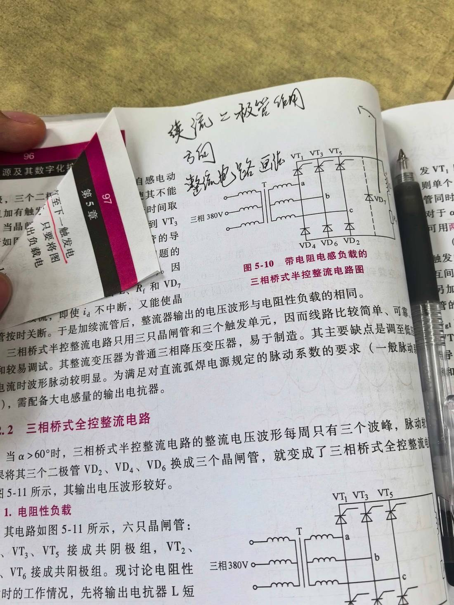

13 手写笔记/课堂实拍/kt-10 教材 p96–97：三相桥式半控 ／ 全控整流（续流二极管）
kt-10 教材 p96–97：三相桥式半控 ／ 全控整流（续流二极管）
📷 课堂实拍 · 老师标注为重点（原图见下；文字为转录，公式/接点以图为准）
教材 p96–97：三相桥式半控 / 全控整流（续流二极管）

实拍转录
- 手写批注：续流二极管作用、方向；整流电路画法（并手画三相桥式主电路：T、a/b/c、VT₁/VT₃/VT₅、VD₄/VD₆/VD₂）。
- 图 5-10 带电阻电感负载的三相桥式半控整流电路图。
- 正文：三相桥式半控整流电路只用三只晶闸管和三个触发单元，因而线路比较简单、可靠和较易调试。其整流变压器为普通三相降压变压器，易于制造。其主要缺点是调至低电压时波形脉动较明显。为满足对直流弧焊电源规定的脉动系数的要求（一般脉动系数…），需配备大电感量的输出电抗器。
- 5.2.2 三相桥式全控整流电路：当 α>60° 时，三相桥式半控整流电路的整流电压波形每周只有三个波峰，脉动较大；将其三个二极管 VD₂、VD₄、VD₆ 换成三个晶闸管，就变成了三相桥式全控整流电路，其输出电压波形较好。
-
- 电阻性负载：其电路如图 5-11 所示，六只晶闸管：VT₁、VT₃、VT₅ 接成共阴极组，VT₂、VT₄、VT₆ 接成共阳极组。
本页重点
- 半控桥：三只晶闸管＋三只二极管 → 线路简单、变压器普通，但低压时脉动大，要配大电感输出电抗器。
- 全控桥：六只晶闸管（VT1/3/5 共阴极组，VT2/4/6 共阳极组），α>60° 后波形比半控桥好（每周六个波峰）。
- 续流二极管的作用：电感负载电流断续时提供续流通路，方向和接法见图上批注。
考点（怎么考）
- 半控桥与全控桥的组成、波形波峰数（3 个 vs 6 个）、优缺点对比。
- 续流二极管为什么加、加在哪、什么方向。
- 共阴极组/共阳极组怎么分（按 VT 编号奇偶）。
对应讲义页
关联
- 概念卡：三相半控桥式整流电路 · 晶闸管弧焊整流器 · 晶闸管
- 讲义：00 第5章 晶闸管整流器 导航 · 总览：课堂实拍总览
- 索引：01 弧焊电源 MOC · 课件标红总表